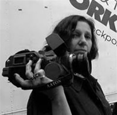

Belkis Vega: una mirada femenina
El acontecimiento que la trajo a Camagüey fue el “Almacén de la Imagen”, evento que tenía en sus propósitos reconocer figuras que por una u otra causa, se hallaban un tanto marginadas. Ella colaboró, ocupando la noche inaugural del programa de ese año: un espacio-homenaje que se fundó bajo el nombre de “Bienaventurados los audaces”. Fue una buenaventura. A partir de allí hemos seguido su trabajo, que ha mantenido un crecimiento inquietante; aunque, en cierto sentido, permanezca fuera del centro.
Belkis, ¿siempre quisiste ser directora de cine?
Si te digo que siempre había soñado con hacer cine, te estoy mintiendo, porque para mí, ser cineasta en aquella época era como ser cosmonauta. Te hablo de una época en que las plantillas de las instituciones que hacían cine, estaban cerradas. Una época en la que no había llegado el video a Cuba, en la que no había escuelas de cine. Así, ¿cómo se puede pensar en ser cineasta? Eso era algo que ni se soñaba. Pero la posibilidad se me dio a principios de los años setenta; estudiaba Diseño Informacional e Industrial, y a finales de primer año nos proponen como trabajo de curso, seleccionar entre hacer el diseño de un sistema de vestuario, o un film didáctico para que sirviera como base audiovisual a una asignatura de la escuela. Por otro lado, también, desde la época del preuniversitario yo era una asidua de los ciclos de la Cinemateca. Me interesaba mucho el cine como espectadora.
Por eso, cuando tuve la opción delante de mí, me dije: “Esto es estar en el cine desde adentro. Voy a tener muchas posibilidades en mi vida como diseñadora de hacer sistemas de vestuario; pero esta es una oportunidad única”. Y, por supuesto, me lancé a la aventura, sin conocer realmente el lenguaje cinematográfico, sin conocer cómo manejar sus recursos expresivos. Y aunque traté de prepararme lo mejor posible en el tiempo de que disponía, hice todo eso con muy poco conocimiento. Pero se me abrió una puerta. De ahí en adelante, encontré en el cine una vocación y una posibilidad para expresar las cosas que me interesaban. Y entonces ya sí quería ser cineasta. No quería ser diseñadora. No quería ser más nada. Solo quería ser cineasta.
¿Tus guiones son absolutamente tuyos o tienes algún colaborador?
En el caso de losdocumentales ¾más de 50¾ los guiones siempre son míos. Pero en la ficción, la verdad es que no me siento segura aún de escribir sola el guión. He realizado dos ficciones de largometraje. En ambos casos, a partir de textos dramáticos bien conocidos, como La casa de Bernarda Alba, de Federico García Lorca o Santa Camila de la Habana Vieja, de José R. Brene. La tercera es un mediometraje de una hora de duración: El mensajero, con guión original escrito por Pilar Ayuso. Pero en todos los casos pedí, y de hecho realicé algunos cambios sobre los guiones originales, conjuntamente con las guionistas. En las dos obras teatrales conté con las versiones de Julio Cid. La casa de Bernarda Alba partió de una propuesta del mismo Julio; pero la versión de Santa Camila… fue a partir de cómo yo veía esa obra realizada para los espectadores cubanos del 2002, bien diferente a la de la década del 60 en que se escribió. Y, tanto en ese caso como con la guionista de El mensajero, la colaboración fue excelente.
¿Cómo te aseguras de que un argumento se halla dentro de tus necesidades expresivas?
Te diría que en este caso me dejo llevar más por la intuición. Valoro mucho cómo siento un determinado tema, un enfoque; o las posibilidades que tengo para una puesta. Necesito que lo que voy a hacer sincronice con mis necesidades expresivas. Valoro mucho la posibilidad de descubrirle al espectador algo nuevo, o al menos, una forma diferente de mirar algo conocido. Pero valoro mucho también, mi empatía emocional con lo que se dice en la obra.
Imagino que tu experiencia como corresponsal de guerra ha marcado tu obra con la impronta de lo esencial. Háblame de cuánto ha influido en tu estilo de trabajo.
Siempre he dicho que yo he sido una persona hasta mi experiencia en El Líbano, y otra, a partir de esa experiencia de filmar con los palestinos y en el conflicto libanés. Pero no creo que el cambio fundamental esté en mi estilo de trabajo, sino en haberme hecho desarrollar una sensibilidad especial hacia determinados temas, que tienen que ver con la sobrevivencia, la vida, los sueños, y la posibilidad de cambio para los seres humanos. Cuando tú convives con la muerte en una guerra; cuando esa posibilidad de morir, que casi todos vemos tan lejos, se te transforma en algo cercano y tangible; necesariamente haces una reflexión sobre qué es la vida en general, y sobre tu vida en particular, y lo que quieres hacer con ella. Siendo cineasta, como es mi caso, me hizo pensar mucho en cómo es el cine que yo quería hacer. Me hizo valorar los pequeños regalos de la naturaleza, que a la vez son tan grandes, y que te recuerdan cada día que estás viva y que la vida tiene un sentido.
¿Ser mujer añade un matiz diferente en la realización de tu obra?
Por supuesto que sí. Yo pienso que hay una mirada femenina. Creo que hay un punto de vista femenino porque las mujeres tenemos una sensibilidad diferente. Creo que tenemos una mirada diferente, creo que si tú ves obras realizadas por hombres y obras realizadas por mujeres sobre el mismo tema, vas a ver una mirada distinta. Si ves las obras que yo hice en Angola, y las que hicieron los hombres, vas a encontrar esa otra mirada de que te hablo. Te interesas por cosas a las que, a lo mejor ellos, no le dan mucha importancia. Creo que en nuestra formación ha estado excluida esa otra mirada, porque nos han formado a partir de una visión masculina del mundo; y pienso que no haber tenido esa otra mirada nos ha hecho mucho daño a todos y a todas. Por eso es importante que la hagamos evidente, que la asumamos de una manera explícita. Te voy a contar una anécdota: cuando a mí me encargaron hacer un documental sobre Céspedes, yo quería hacer algo diferente, quería hablar sobre un ser humano que se llamaba Carlos Manuel de Céspedes. Te confieso que hasta esos momentos no me atraía tanto como Martí, o como Agramonte, y lo primero que hice fue ir a ver a Rafael Acosta, que es un estudioso de Céspedes, y le dije: “Dime algo que me haga descubrir algo nuevo, algo que me mueva”, y lo logró; me habló del Céspedes humano, del hombre. Pero también hablé con la Dra. Hortensia Pichardo, reconocida historiadora, y que era una mujer que hablaba de Céspedes con una pasión tal, que parecía que lo había tenido al lado, parecía que lo conocía. Era una relación emocional, afectiva, la que ella tenía con Céspedes. Por otro lado, descubrí también la poesía de Céspedes. Nunca había leído su poesía, y como la poesía me conmovió, fui ver a la poeta Reina María Rodríguez, y ella me habló de la necesidad de expresión del espíritu, que se reflejaba en esos poemas.
Bueno, en fin, tenía ya cinco personas que me interesaba entrevistar, pero debía hacer un documental que no podía tener más de quince minutos, pues era para un espacio de la Televisión, y pensé que necesitaba imprescindiblemente los testimonios de las tres mujeres. Pero a la vez me descubro pensando que tenía que balancear los entrevistados, y debía, cuando más, dejar dos mujeres para que pudiera quedar un hombre al menos. Y entonces me llamé a capítulo y me dije: “Si has hecho películas en las que solo hablan hombres y no te ha preocupado, a qué se debe ahora esta preocupación porque en ésta nada más hablen mujeres”. Y al final me dije: “Esta es una mirada femenina de Carlos Manuel de Céspedes. Una mirada desde cuatro mujeres: ellas tres y yo”.
Ocurre que la mayoría de las veces suelen encasillar a las mujeres en temas específicos, temas que algunos denominan “de mujeres”. Y yo quiero también hacer ver mi mirada en los temas que habitualmente hacen los hombres, y creo que eso también es muy importante. Por eso hice una serie sobre un tema históricamente tan masculino, como los corresponsales de guerra. Creo que las mujeres tenemos una mirada distinta sobre cosas que siempre se han visto totalmente diferentes, y pienso que eso es lo que puede complementarla: esto lo vemos de una manera nosotras, y ellos lo ven de otra manera, y vamos así a tener esas dos miradas.
Santa Camila de La Habana Vieja es una historia muy bien resuelta, y con un grado de actualización de sus conflictos, que la convierte en una obra necesaria en nuestro medio. ¿Por qué no vuelves al largo de ficción? ¿Por qué no en 35 mm?
Muchas gracias por tu valoración de Santa Camila… Claro que a mí también me gustaría hacer un largo de ficción en 35 mm, pero realmente no tengo demasiados deseos de dedicarme, y desgastarme, tratando de hacer un guión para un largometraje que casi no tengo esperanzas de que la comisión del ICAIC lo acepte, y no quisiera entrar ahora en argumentaciones de por qué. Todavía mis posibilidades de hacer ficción siguen estando circunscritas al ICRT, que cada vez tiene menos dinero y es más difícil realizar este tipo de producción, y a mí personalmente, me desgasta mucho. Hay otras, y otros directores, que sobreviven mejor en este medio. Pero de cualquier manera, es una puerta que sigue abierta.
Por el momento, he concluido mi primer gran proyecto independiente, que fue sobre personas que viven con VIH/SIDA, y que dio vida a un largometraje documental que utiliza también una forma de expresión teatral, dos documentales de cortometraje y una serie de ocho capítulos. He decidido darme un tiempo, centrándome en la docencia, para pensar qué voy a hacer después. En este después hay dos proyectos de largometraje de ficción rondándome. Alguno haré, aunque veo difícil que pueda ser en 35 mm.
Belkis Vega

Directora y guionista. Licenciada en Historia del Arte. Ha sido directora asistente en series para televisión. Realizó estudios de Diseño Informacional y ha recibido cursos de postgrado en Dramaturgia, Semiótica, Estética y Puesta en Escena. Se ha destacado fundamentalmente por su obra en cine documental, reconocida y premiada nacional e internacionalmente. Fue corresponsal de guerra en África y en el Medio Oriente. Ha filmado reportajes en Siria y El Congo; y documentales en El Líbano, Angola y España. Ha impartido cursos y conferencias en la Escuela Internacional de Cine de San Antonio de los Baños, Estados Unidos, América Latina y en España. Es Profesora Titular Adjunta de la Facultad de Medios Audiovisuales del Instituto Superior de Arte de La Habana.
|